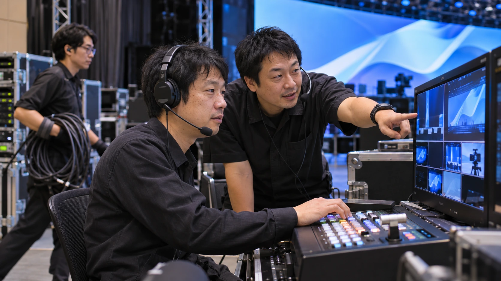

ホーム / 技術提供
TECHNICAL CREW / LOTUS
本番の一瞬を、
チームの技術で。
映像の流れを読み、機材を整え、進行に応える。
スイッチング・LED調整・映像送出から、
担当工程の取りまとめまで。
現場のチームに加わり、任された役割をつなぎます。
技術スタッフを相談する ↗必要な工程から選ぶ ↓
ONE SHOW. CONNECTED WORK.
画面の向こうまで、
仕事をつなぐ。
- 01読み解く
素材・信号・画面の関係を整理。
- 02組み立てる
担当と作業の順序を共有。
- 03応える
本番の進行に合わせて操作。
- 04届ける
出力と客席からの見え方を確認。
FROM PREPARATION TO HANDOVER
最初の相談で、すべての資料がそろっている必要はありません。日程・会場・頼みたい工程から、決まっていることと未定のことをお知らせください。

出す前に合わせ、戻ったら確かめる。
現場に出ない日でも、倉庫の作業だけをお手伝いできます。機材リストと中身を合わせて送り出し、戻ってきた機材を数量・付属品・状態の順に確かめて記録します。

出庫準備・返却照合を詳しく見る
- 出庫準備
- 機材リストと実物の照合、本体・付属品・ケーブルの数量確認、ケーブルの巻き直し、現場で出す順を考えたケースへの詰め込み。
- 返却照合
- 戻った機材の数量・付属品・外観の状態を確認し、不足や気になる点を記録して担当者へ共有します。
- 事前に確認すること
- 倉庫の場所と作業時間、機材リスト（型式・数量）、照合結果の記録方法と共有先、トラックの着時間。
- 担当しないこと
- 機材の修理や、メーカー点検が必要な作業は含みません。気になった点は記録して、判断を担当者にお任せします。

素材と進行、機材と担当をそろえる。
進行表・会場図・機材構成をもとに、担当工程と当日の連絡系統を共有します。
担当・準備・引き継ぎを詳しく見る
- 担当すること
- 進行・素材・機材構成を読み合わせ、操作や作業の分担を整理します。
- 事前に確認すること
- 進行表、会場図面、機材リスト、素材の受け渡し日・方法、現場責任者と各担当の連絡系統。
- 準備で決めておくこと
- 誰が何を担当するか、何をいつ受け取るかを共有。未決定の条件は、担当と確認のタイミングをそろえます。

つないで、映して、本番の状態へ。
担当機材の搬入・設置・配線。入力から画面までの表示を確かめ、リハーサルに備えます。
担当・準備・引き継ぎを詳しく見る
- 担当すること
- 合意した範囲の機材設置・配線・映像確認。表示先、素材の見え方、音声の受け渡しを本番前に確認します。
- 事前に確認すること
- 搬入経路、作業時間、設置位置、使用機材、会場の電源条件、他セクションとの作業順序。
- 次の担当へ引き継ぐこと
- 指定した画面に映像が届き、次の担当へ状態を引き継げること。機材の支え方・電源・作業条件が合わない場合は、作業を進めず責任者と調整します。
支え方・電源・作業条件が合わない場合は、作業を止めて責任者と調整します。

進行のきっかけに、映像を合わせる。
素材の順番や切り替えの合図を合わせ、担当ポジションで映像送出・操作を行います。
担当・準備・引き継ぎを詳しく見る
- 担当すること
- リハーサルで再生・切り替えの合図を合わせ、本番は担当ポジションの送出・操作を行います。
- 事前に確認すること
- 上映する最終データ、進行表、合図を出す担当、リハーサル時間、変更時の連絡方法。配信や収録がある場合は、その担当と出力先。
- 変更・異常時の確認
- 素材の更新と進行変更を関係者へ共有。異常時は、事前に決めた待機画面や連絡手順に沿って対応します。予備機の有無と、切り替えを担当する人も事前に確認します。

終演後も、次につながる段取りを。
作業順序に沿って撤去・梱包・搬出。機材の数量、返却先、共有事項を引き継ぎます。
担当・準備・引き継ぎを詳しく見る
- 担当すること
- 現場の撤去順序に合わせ、担当機材の片付け・梱包・搬出を行います。
- 事前に確認すること
- 撤去開始の合図、退出時刻、返却先、ケース・付属品の一覧、搬出車両と他セクションの動き。
- 引き渡すこと
- 数量・付属品・機材の状態、返却先、残る確認事項。破損や不足が見つかった場合は、その場で責任者へ共有します。
映像制作、音響・照明の運用、会場の電気工事や吊り設備の施工は、上記の技術提供に自動的に含まれるものではありません。必要な作業と担当会社を事前に分けて整理します。